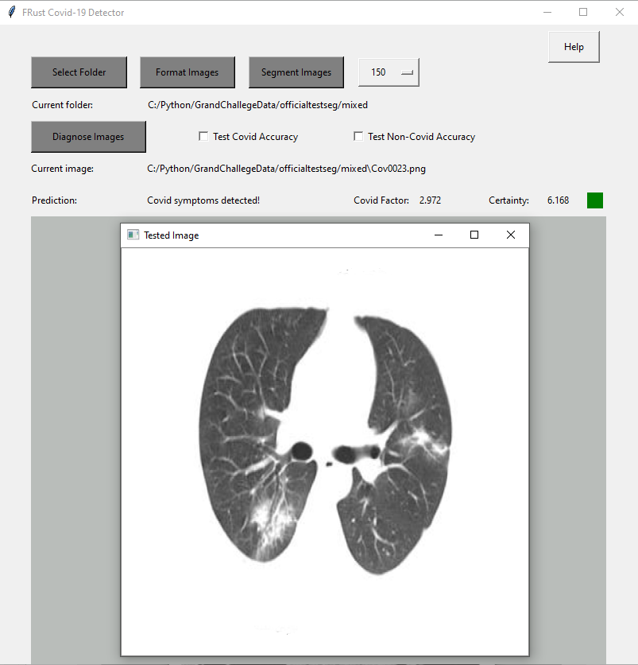
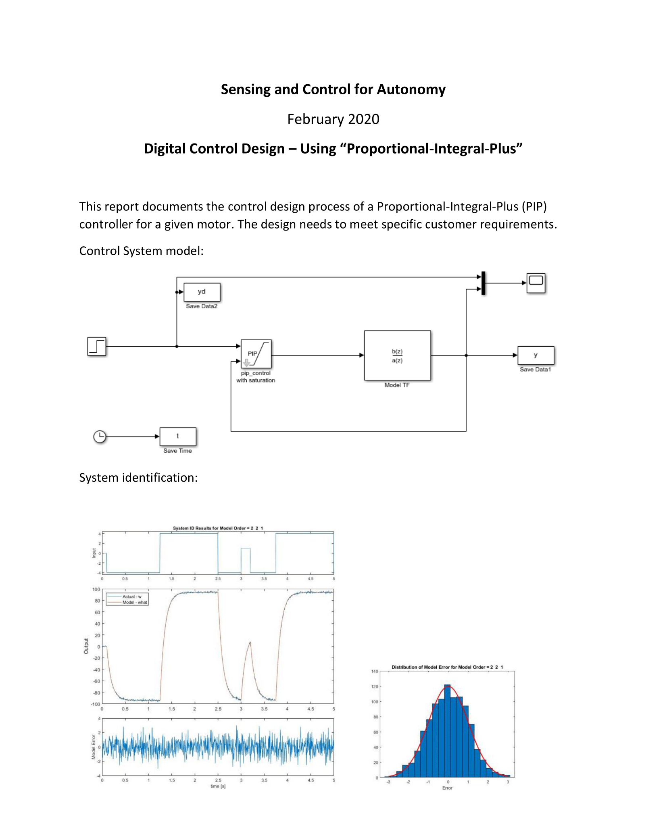
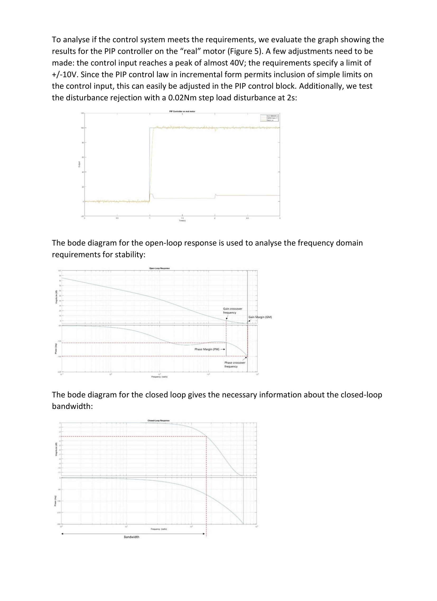
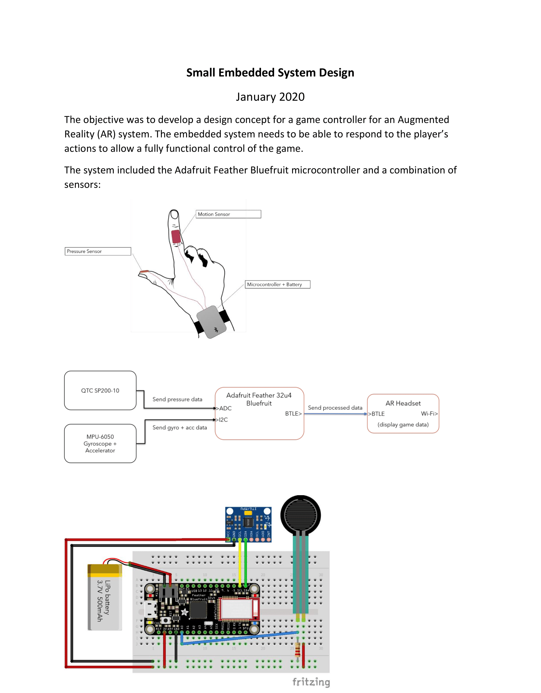
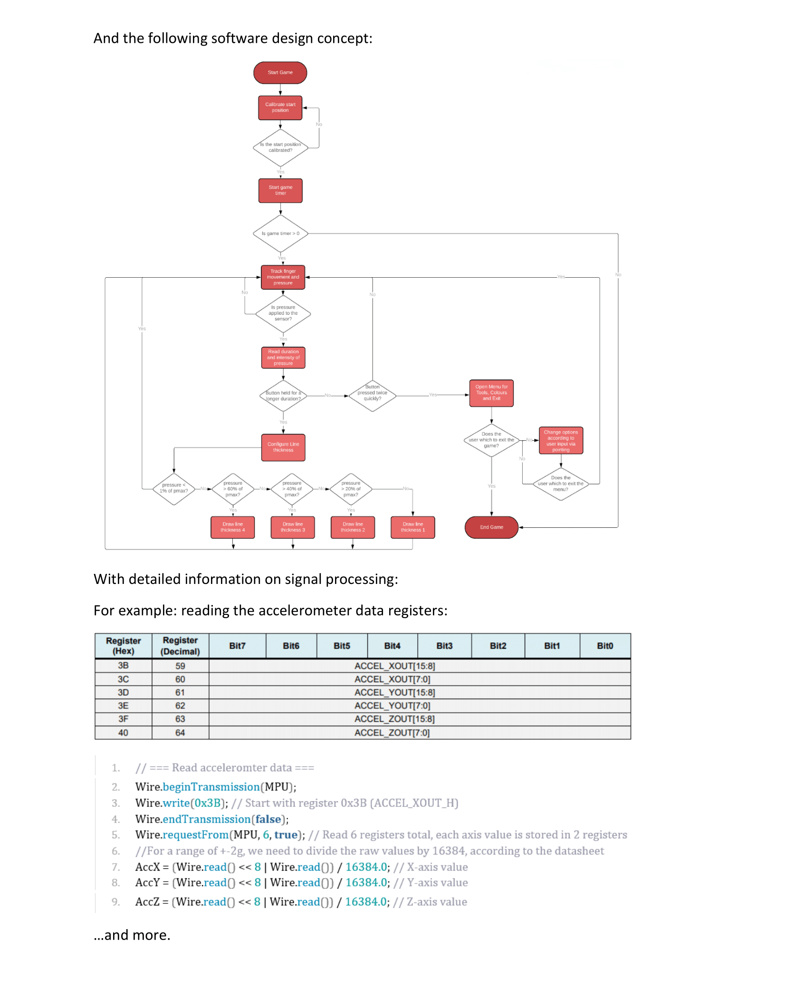
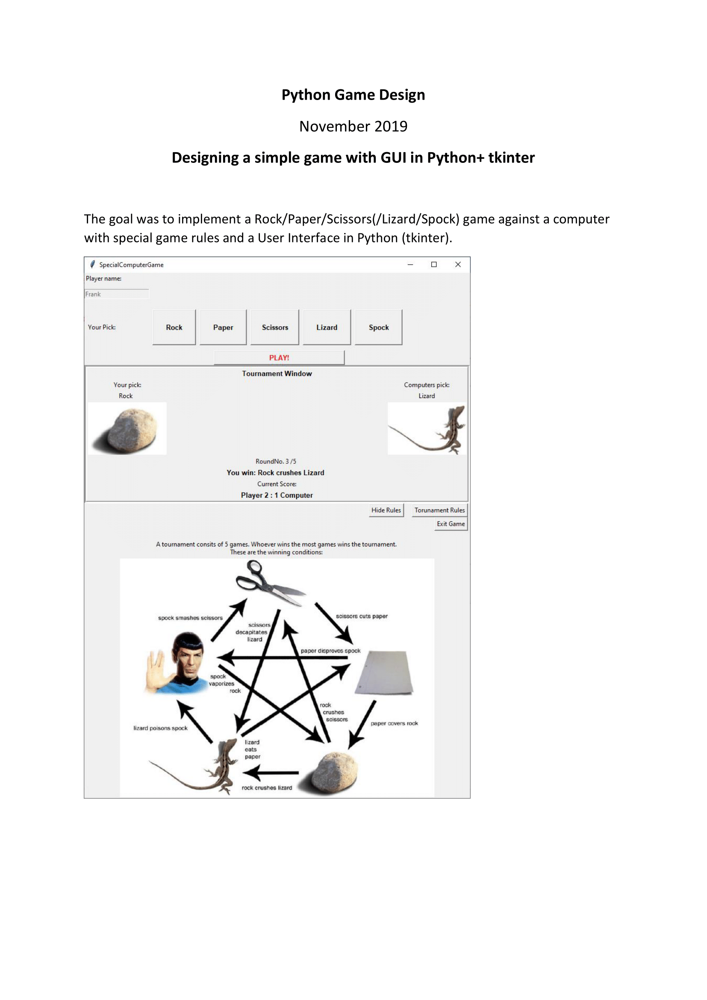

My Skills and Tools
Python

PyTorch
TensorFlow
C++

•CNNs •CNN Training •PyTorch •Performance Evaluation •Transfer Learning •Fine Tuning •Computer Vision •Image Processing •Data augmentation •OpenCV
One project I am especially proud of is the Covid-19 detector for lung CTs that I developed with Computer Vision and Deep Learning Tools in Python.
The detector achieved an impressive classification accuracy of about 97% on official test datasets, which highly exceeds average radiologist performance:
The CT images are pre-processed for segmentation and feature enhancement unsing Python in combination with OpenCV and NumPy.
The pre-processed images were then used to train multiple different Convolutional Neural Network (CNN) for the classification task using PyTorch.
The models with best performance were then further fine-tuned and re-evaluated until the final result was achieved.
Taking part at the public Covid-19 detection challenge at grand-challenge.org, the final model outperformed all candidates on the Leaderboard on the official test-set.
The final performance measurements for this task were:
•CNN Design •CNN Training •TensorFlow •Keras •Performance Evaluation •Training Optimization •Hyperparameter Tuning •TensorBoard •Model Deployment •TensorFlow.js
I developed a handwritten digit classifier by designing a CNN with TensorFlow and training with this kaggle dataset. This is a quite popular and comparably easy task. The main goal was to focus on performance evaluation of different models and hyperparameters and model deployment.
By trying out different models and hyperparameters, I managed to achieve validation accuracies of roughly 99%. The training process was evaluated using TensorBoard, which provides great visualization features as shown below.
This was the first CNN model architecture that was created by stacking a few Convolutional, Pooling and Dense Layers with a total of roughly 890 thousand trainable parameters:
After trying out a few different hyperparameters like differnt optimizers, activation functions, learning rates and number of epochs for training it achieved an accuracy of 99%.
However, after removing and shrinking a few layers and adapting a few hyperparameters, a smaller model with roughly 220 thousand trainable parameters also managed to achieve validation accuracies of 99%:
This is a direct comparison of the epoch accuracies of both networks using TensorBoard :
It shows epoch accuracy for the training data and the validation data for both CNNs, which helps to directly evaluate performance and avoid overfitting. With TensorBoard the training process can be analysed very deeply, you can even track specific parameters like biases etc.
By adapting the CNN architecture and the hyperparameters we managed to train a smaller and faster CNN without reducing performance, which is very important for actual deployment in real-time environments on embedded devices
We can also take a look at the confusion matrix to evaluate performance on a test set:

And analyse a few wrong classifications to see if severe errors were made:

By using TensorFlow.js the trained model can then be converted for deployment on this website, which is already implemented. However, I still need to work on this HTML canvas to input the drawn images to the model to make predictions.
•Face detection •Feature detection •CNN •Transfer Learning •TensorFlow
The goal is to develop an algorithm that takes a picture of your face as an input and creates a cartoon avatar that matches your features. This is similar to what Bitmoji does very succesfully:
The idea is to use the CelebFaces Attributes (CelebA) Dataset, providing descriptions for over 200,000 images of celebritiy faces and to follow these steps:
•Web Development •Web Design •JavaScript •HTML •CSS •Git •GitHub
You are currently looking at the result. Since I coded the site from scratch in raw JS, HTML and CSS, it is still quite basic. I might expand it with frameworks like Angular or React (which is technically a library, I know) in the future.
•Deep Learning Algorithms •PyTorch •TensorFlow •Data Processing and Analysis •Pandas
This is a personal adventure to try out a few different Machine Learning algorithms and frameworks for stock price predictions.
The final goal would be to develop an algorithm that is able to do automated day-trading (ideally with profits) by evaluating stock signals and trends.
Since finding a Stock Broker with a fitting API for real-time data is quite difficult/expensive, I started with historical Bitcoin data to test some basic algorithms for price predictions.
Some of my efforts and results may be published here soon ... unless the trading algorithm actually works well enough, then I'm retiring.
•Matlab •Simulink •Control System Simulation & Optimization •PIP-Control •System Requirements
Designing Control Systems to meet customer requirements:
 • Hardware & Software Design Concepts •Microcontrollers •Sensor Data •Arduino
Designing an Augmented Reality game controller using Embedded System Design techniques:
 •Object Oriented Programming •Logical Thinking •Problem Solving
To keep my skills with Python, C++ and Java programming up to date, I am currently working thorugh the tasks at AdventOfcode.com .
I might be posting some of the interesting task results here or on Github.
•Python •Object Oriented Programming •Game Functionality •GUI Design •tkinter
This was just a fun project to do some OOP in Python to develop basic game functionality and some additional features.
The simple UI is designed in tkinter and focusses on functionality instead of looks (as you can see below).
